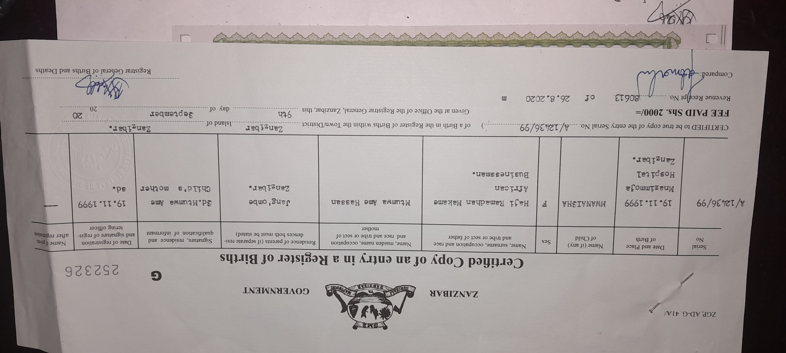
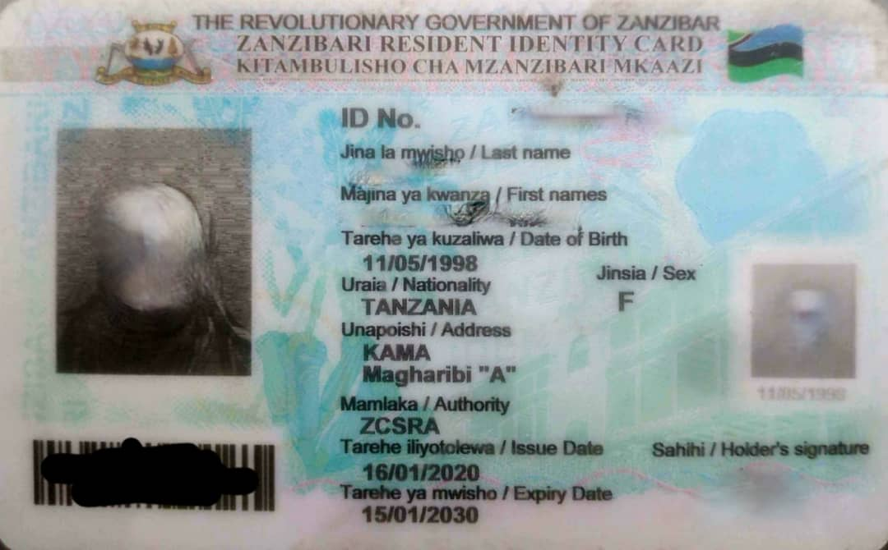
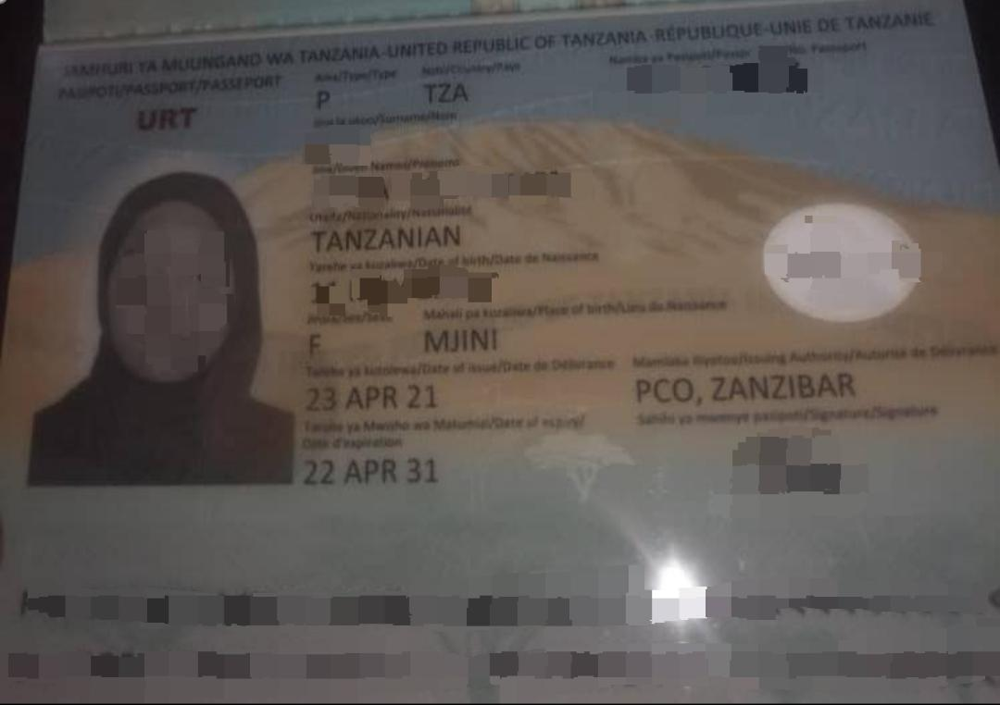

Namna Ya Kujiunga Mfuko wa Hifadhi ya Jamii Zanzibar (ZSSF)
Mfuko wa Hifadhi ya Jamii Zanzibar ulianzishwa chini ya Sheria ya Mfuko wa Hifadhi ya Zanzibar namba 2 ya mwaka 1998 baada ya kufanyiwa marekebisho na Sheria ya Mfuko wa Hifadhi ya Jamii ya Zanzibar namba 9 ya mwaka 2002 na kutungwa tena na Sheria namba 2 ya mwaka 2005. Kabla ya kupitishwa kwa Sheria na uanzishwaji wa Mfuko wa Hifadhi ya Jamii Zanzibar
hapakuwa na mpango rasmi wa hifadhi ya jamii Zanzibar. Wala hapakuwa na sekta binafsi muhimu/sekta ya pensheni ya kazini Zanzibar. Kabla ya kuanzishwa kwa Mfuko wa Hifadhi ya Jamii Zanzibar, wafanyakazi wa utumishi wa umma Zanzibar walikuwa wanalipwa na kupata mafao ya uzeeni chini ya Sheria ya Pensheni namba 2 ya 1990.
Masharti ya kufuzu:
-
Mnufaika lazima awe ameajiriwa au ni muajiri wa serikali au taasisi binafsi.
Lengo na dhamira za mfuko wa jamii (ZSSF):
-
Maono
Mfuko wa Hifadhi ya Jamii Zanzibar (ZSSF) unatafuta kuwa kiongozi na mtoaji mfano wa hifadhi ya jamii katika Mkoa. -
Misheni
ZSSF imejitolea kuwa mtoaji mahiri wa faida za hifadhi ya jamii kupitia utumiaji wa wafanyakazi wenye uwezo na ari. -
Lengo
Kubadilisha mapato ya mwanachama pale yanapotokea dharura yaani uzee, magonjwa, uzazi, ulemavu na kifo.
Taratibu za kuomba uwanachama ZSSF:
Kujiunga na uwanachama, unatakiwa kuwasilisha nyaraka zifuatazo:-
-
Mnufaika lazima awe na barua rasmin inayotoka kwa muajiri wake.
-
Mwanachama awe na kivuli cha cheti cha kuzaliwa,vikikosekana hivyo basi awe na kivuli cha kitambulisho cha mzazibar,leseni au passport.
 Cheti cha kuzaliwa
Kitambulisho Cha Mzanzibar
Kitambulisho Cha Mtanzania
Passport
-
Mwanachama awe cha picha ya passport moja.